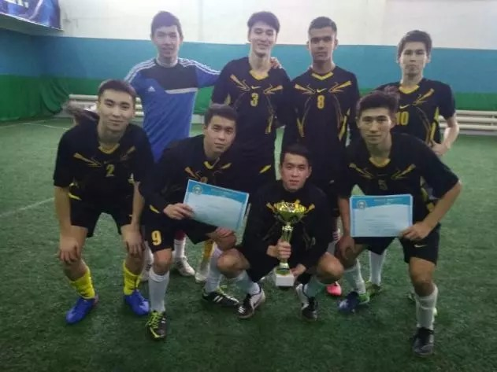
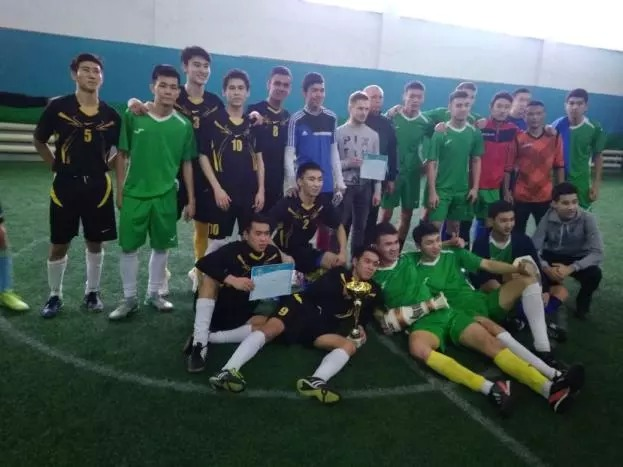
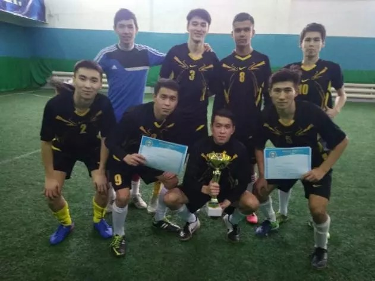
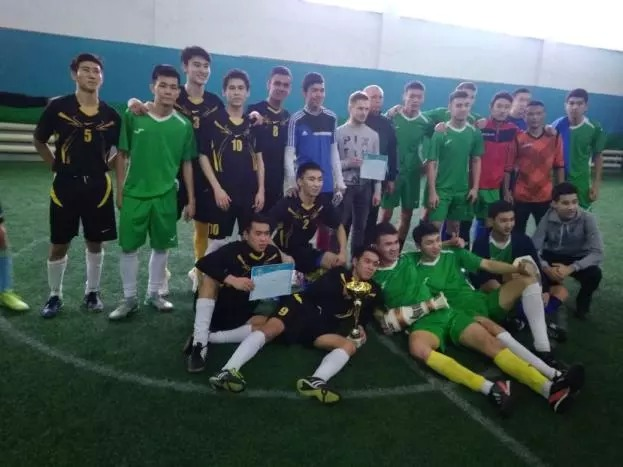

Конкурс «Лучший сайт»
І. ОБЩИЕ ПОЛОЖЕНИЯНаша команда заняла 1 место по минифутболу!
С 9 по 23 декабря 2018 года прошли соревнования по минифутболу среди ВУЗов на Кубок Ректора СГУ им. Шакарима. Наша команда заняла - 1 место! 



С 19 по 25 декабря прошли соревнования по футзалу
С 9 по 23 декабря 2018 года прошли соревнования по минифутболу среди ВУЗов на Кубок Ректора СГУ им. Шакарима. Наша команда заняла - 1 место!